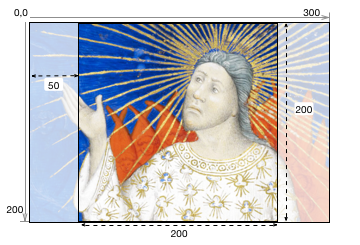
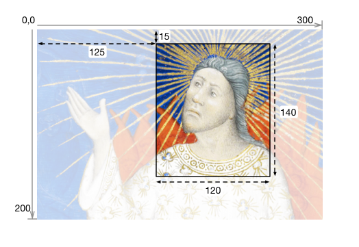
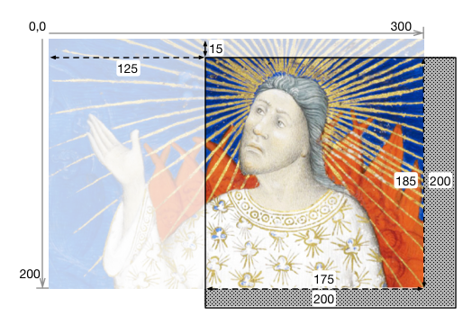
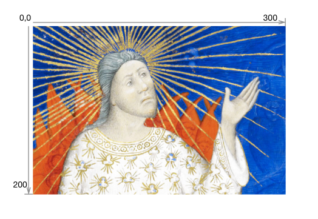
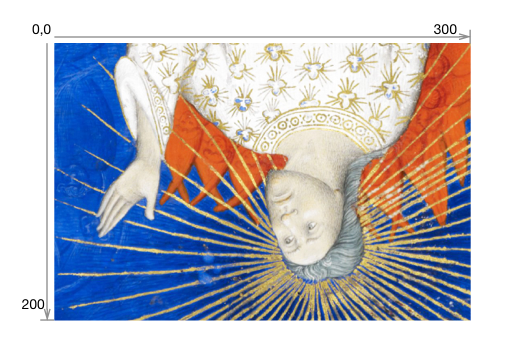

Status of this Document #
This Version: 3.0.0
Latest Stable Version: ..
Previous Version: 2.1.1
Editors:
-
Michael Appleby, Yale University
-
Tom Crane, Digirati
-
Robert Sanderson, J. Paul Getty Trust
-
Jon Stroop, Princeton University Library
-
Simeon Warner, Cornell University
Copyright © 2012-2021 Editors and contributors. Published by the IIIF Consortium under the CC-BY license, see disclaimer.
1. Introduction #
This document describes an image delivery API defined by the International Image Interoperability Framework (IIIF, pronounced “Triple-Eye-Eff”) Consortium. The IIIF Image API specifies a web service that returns an image in response to a standard HTTP or HTTPS request. The URI can specify the region, size, rotation, quality characteristics and format of the requested image. A URI can also be constructed to request basic technical information about the image to support client applications. This API was conceived of to facilitate systematic reuse of image resources in digital image repositories maintained by cultural heritage organizations. It could be adopted by any image repository or service, and can be used to retrieve static images in response to a properly constructed URI.
Please send feedback to iiif-discuss@googlegroups.com.
1.1. Audience and Scope #
This document is intended for architects and developers building applications that share and consume digital images, particularly from cultural heritage institutions, museums, libraries and archives. Target applications include:
- Digital image repositories and distributed content networks.
- Image focused web applications, such as pan/zoom viewers, book-readers, etc.
- Client applications using image content for analysis or comparison.
This specification concerns image requests by a client, but not management of the images by the server. It covers how to respond to requests that follow a particular URI syntax, but does not cover methods of implementation such as rotation algorithms, transcoding, color management, compression, or how to respond to URIs that do not conform to the specified syntax. This allows flexibility for implementation in domains with particular constraints or specific community practices, while supporting interoperability in the general case.
Implementations may use a pre-generated set of files served as static web resources and still enable rich user experiences. Dynamic image server implementations may provide additional functionality beyond the base level of compliance.
1.2. Terminology #
The term underlying image content is used to refer to the source image data. No assumptions are made about its format or structure. It might be derived from one or more source images but could also be dynamically generated.
The term full image is used to refer to the entire area of the underlying image content, with the pixel dimensions given in the image information document, and which is imagined as the starting point for image requests.
The key words must, must not, required, shall, shall not, should, should not, recommended, and optional in this document are to be interpreted as described in RFC 2119.
2. URI Syntax #
The IIIF Image API can be called in two ways:
- Request an image, derived from the underlying image content.
- Request information about the image service, including characteristics, functionality available, and related services.
Both convey the request’s information in the path segments of the URI, rather than as query parameters. This makes responses easier to cache, either at the server or by standard web-caching infrastructure. It also permits a minimal implementation using pre-computed files in a matching directory structure.
There are four parameters shared by the requests, and other IIIF specifications:
| Name | Description |
|---|---|
| scheme | Indicates the use of the HTTP or HTTPS protocol in calling the service. |
| server | The host server on which the service resides. The parameter may also include a port number. |
| prefix | The path on the host server to the service. This prefix is optional, but may be useful when the host server supports multiple services. The prefix may contain multiple path segments, delimited by slashes, but all other special characters must be encoded. See URI Encoding and Decoding for more information. |
| identifier | The identifier of the requested image. This may be an ARK, URN, filename, or other identifier. Special characters must be URI encoded. |
The combination of these parameters forms the image service’s base URI and identifies the underlying image content. It is constructed according to the following URI template (RFC6570):
{scheme}://{server}{/prefix}/{identifier}
When the base URI is dereferenced, the interaction should result in the image information document. It is recommended that the response be a 303 status redirection to the image information document’s URI. Implementations may also exhibit other behavior for the base URI beyond the scope of this specification in response to HTTP request headers and methods.
To allow for extensions, this specification does not define the server behavior when it receives requests that do not match either the base URI or one of the described URI syntaxes below.
2.1. Image Request URI Syntax #
The IIIF Image API URI for requesting an image must conform to the following URI template:
{scheme}://{server}{/prefix}/{identifier}/{region}/{size}/{rotation}/{quality}.{format}
For example:
https://example.org/image-service/abcd1234/full/max/0/default.jpg
The parameters of the Image Request URI include region, size, rotation, quality and format, which define the characteristics of the returned image. These are described in detail in Image Requests.
2.2. Image Information Request URI Syntax #
The URI for requesting image information must conform to the following URI template:
{scheme}://{server}{/prefix}/{identifier}/info.json
For example:
https://example.org/image-service/abcd1234/info.json
The scheme, server, prefix and identifier components of the information request must be identical to those for the image request described above for the image content that the image information document describes. The image information document is described in detail in the Image Information section.
3. Identifier #
The API places no restrictions on the form of the identifiers that a server may use or support. All special characters (e.g. ? or #) must be URI encoded to avoid unpredictable client behaviors. The URI syntax relies upon slash (/) separators so any slashes in the identifier must be URI encoded (also called “percent encoded”). See the additional discussion in URI Encoding and Decoding.
4. Image Requests #
All parameters described below are required for compliant construction of a IIIF Image API URI. The sequence of parameters in the URI must be in the order described below. The order of the parameters is also intended as a mnemonic for the order of the operations by which the service should manipulate the image content. Thus, the requested image content is first extracted as a region of the full image, then scaled to the requested size, mirrored and/or rotated, and finally transformed into the requested color quality and format. This resulting image is returned as the representation for the URI.
Size and region parameters in pixels must be non-negative integers. Size and region parameters in percentages and the rotation parameter must be positive floating point numbers or integers. For details of the representation of floating point numbers in IIIF URIs, see the Floating Point Values section.
Servers should support CORS on image responses.
4.1. Region #
The region parameter defines the rectangular portion of the underlying image content to be returned. Region can be specified by pixel coordinates, percentage or by the value full, which specifies that the full image should be returned.
| Form | Description |
|---|---|
full |
The full image is returned, without any cropping. |
square |
The region is defined as an area where the width and height are both equal to the length of the shorter dimension of the full image. The region may be positioned anywhere in the longer dimension of the full image at the server’s discretion, and centered is often a reasonable default. |
x,y,w,h |
The region of the full image to be returned is specified in terms of absolute pixel values. The value of x represents the number of pixels from the 0 position on the horizontal axis. The value of y represents the number of pixels from the 0 position on the vertical axis. Thus the x,y position 0,0 is the upper left-most pixel of the image. w represents the width of the region and h represents the height of the region in pixels. |
pct:x,y,w,h |
The region to be returned is specified as a sequence of percentages of the full image’s dimensions, as reported in the image information document. Thus, x represents the number of pixels from the 0 position on the horizontal axis, calculated as a percentage of the reported width. w represents the width of the region, also calculated as a percentage of the reported width. The same applies to y and h respectively. |
If the request specifies a region which extends beyond the dimensions of the full image as reported in the image information document, then the service should return an image cropped at the image’s edge, rather than adding empty space.
If the requested region’s height or width is zero, or if the region is entirely outside the bounds of the reported dimensions, then the server should return a 400 (Bad Request) status code.
Examples:

1 region=full
|

2 region=square
|
|

3 region=125,15,120,140
|

4 region=pct:41.6,7.5,40,70
|
|

5 region=125,15,200,200
N.B. Returned image is 175,185 px |

6 region=pct:41.6,7.5,66.6,100
N.B. Returned image is 175,185 px |
4.2. Size #
The size parameter specifies the dimensions to which the extracted region, which might be the full image, is to be scaled. With the exception of the w,h and ^w,h forms, the returned image maintains the aspect ratio of the extracted region as closely as possible. Sizes prefixed with ^ allow upscaling of the extracted region when its pixel dimensions are less than the pixel dimensions of the scaled region.
| Form | Description |
|---|---|
max |
The extracted region is returned at the maximum size available, but will not be upscaled. The resulting image will have the pixel dimensions of the extracted region, unless it is constrained to a smaller size by maxWidth, maxHeight, or maxArea as defined in the Technical Properties section. |
^max |
The extracted region is scaled to the maximum size permitted by maxWidth, maxHeight, or maxArea as defined in the Technical Properties section. If the resulting dimensions are greater than the pixel width and height of the extracted region, the extracted region is upscaled. |
w, |
The extracted region should be scaled so that the width of the returned image is exactly equal to w. The value of w must not be greater than the width of the extracted region. |
^w, |
The extracted region should be scaled so that the width of the returned image is exactly equal to w. If w is greater than the pixel width of the extracted region, the extracted region is upscaled. |
,h |
The extracted region should be scaled so that the height of the returned image is exactly equal to h. The value of h must not be greater than the height of the extracted region. |
^,h |
The extracted region should be scaled so that the height of the returned image is exactly equal to h. If h is greater than the pixel height of the extracted region, the extracted region is upscaled. |
pct:n |
The width and height of the returned image is scaled to n percent of the width and height of the extracted region. The value of n must not be greater than 100. |
^pct:n |
The width and height of the returned image is scaled to n percent of the width and height of the extracted region. For values of n greater than 100, the extracted region is upscaled. |
w,h |
The width and height of the returned image are exactly w and h. The aspect ratio of the returned image may be significantly different than the extracted region, resulting in a distorted image. The values of w and h must not be greater than the corresponding pixel dimensions of the extracted region. |
^w,h |
The width and height of the returned image are exactly w and h. The aspect ratio of the returned image may be significantly different than the extracted region, resulting in a distorted image. If w and/or h are greater than the corresponding pixel dimensions of the extracted region, the extracted region is upscaled. |
!w,h |
The extracted region is scaled so that the width and height of the returned image are not greater than w and h, while maintaining the aspect ratio. The returned image must be as large as possible but not larger than the extracted region, w or h, or server-imposed limits. |
^!w,h |
The extracted region is scaled so that the width and height of the returned image are not greater than w and h, while maintaining the aspect ratio. The returned image must be as large as possible but not larger than w, h, or server-imposed limits. |
Requests for sizes not prefixed with ^ that result in a scaled region with pixel dimensions greater than the pixel dimensions of the extracted region are errors that should result in a 400 (Bad Request) status code.
Requests for sizes prefixed with ^ that require upscaling should result in a 501 (Not Implemented) status code if the server does not support upscaling, while a 400 (Bad Request) status code should be returned in response to other client request syntax errors. For example, a request for the size ^pct:120 should result in a 501 status code if the server does not support upscaling.
For all requests the pixel dimensions of the scaled region must not be less than 1 pixel or greater than the server-imposed limits. Requests that would generate images of these sizes are errors that should result in a 400 (Bad Request) status code.
Examples:

1 size=max
N.B. Assuming that the image has a |
1 size=^max
N.B. Assuming that the image has a |

2 size=150,
|
2 size=^360,
|

3 size=,150
|
3 size=,^240
|

4 size=pct:50
|
4 size=pct:120
|

5 size=225,100
|
5 size=^360,360
|

6 size=!225,100
N.B. Returned image is 150,100 px |
6 size=^!360,360
N.B. Returned image is 360,240 px |
4.3. Rotation #
The rotation parameter specifies mirroring and rotation. A leading exclamation mark (“!”) indicates that the image should be mirrored by reflection on the vertical axis before any rotation is applied. The numerical value represents the number of degrees of clockwise rotation, and may be any floating point number from 0 to 360.
| Form | Description |
|---|---|
n |
The degrees of clockwise rotation from 0 up to 360. |
!n |
The image should be mirrored and then rotated as above. |
A rotation value that is out of range or unsupported should result in a 400 (Bad Request) status code.
In most cases, rotation will change the width and height dimensions of the returned image. The service should return an image that contains all of the image contents requested in the region and size parameters, even if the dimensions of the returned image file are different than specified in the size parameter. The image contents should not be scaled as a result of the rotation, and there should be no additional space between the corners of the rotated image contents and the bounding box of the returned image.
For rotations which are not multiples of 90 degrees, it is recommended that the client request the image in a format that supports transparency, such as png, and that the server return the image with a transparent background. There is no facility in the API for the client to request a particular background color or other fill pattern.
Examples:
|
1 rotation=0
|

2 rotation=180
|

3 rotation=90
|

4 rotation=22.5
|
|

5 rotation=!0
|

6 rotation=!180
|
4.4. Quality #
The quality parameter determines whether the image is delivered in color, grayscale or black and white.
| Quality | Parameter Returned |
|---|---|
color |
The image is returned with all of its color information. |
gray |
The image is returned in grayscale, where each pixel is black, white or any shade of gray in between. |
bitonal |
The image returned is bitonal, where each pixel is either black or white. |
default |
The image is returned using the server’s default quality (e.g. color, gray or bitonal) for the image. |
The default quality exists to support level 0 compliant implementations that may not know the qualities of individual images in their collections. It also provides a convenience for clients that know the values for all other parameters of a request except the quality (e.g. .../full/120,80/90/{quality}.png to request a thumbnail) in that a preliminary image information request that would only serve to find out which qualities are available can be avoided.
Regardless of level of compliance, services that make additional qualities beyond default available must list those qualities in the extraQualities property of the response to the Image Information Request. A request for an image with an unsupported quality value should return a 400 (Bad Request) status code.
A request for the color quality of an image must return an image. This image may be comprised solely of grayscale or bitonal pixels if this is all of the color information the server has available. The server should not include color in the extraQualities list in such cases, but a request for the color quality must not result in an error. Similarly, a request for the grayscale quality may return an image comprised solely of bitonal pixels.
Examples:
|
1 quality=default
|
2 quality=color
|
|
3 quality=gray
|

4 quality=bitonal
|
4.5. Format #
The format of the returned image is expressed as a suffix, mirroring common filename extensions, at the end of the URI.
| Extension | MIME Type |
|---|---|
jpg |
image/jpeg |
tif |
image/tiff |
png |
image/png |
gif |
image/gif |
jp2 |
image/jp2 |
pdf |
application/pdf |
webp |
image/webp |
A format value that is unsupported should result in a 400 (Bad Request) status code.
Examples:
.../full/max/0/default.jpg.../full/max/0/default.png.../full/max/0/default.tif
4.6. Order of Implementation #
The sequence of parameters in the URI is intended as a mnemonic for the order in which image manipulations are made against the underlying image content. This is important to consider when implementing the image service because applying the same parameters in a different sequence will often result in a different image being delivered.
The parameters should be interpreted as if the sequence of image manipulations were:
Region THEN Size THEN Rotation THEN Quality THEN Format
If the rotation parameter includes mirroring (!), the mirroring is applied before the rotation.

1 region=125,15,120,140 size=90, rotation=!345 quality=gray
|
4.7. Floating Point Values #
Size and region parameters given as percentages and the rotation parameter allow positive floating point number values. Integer values should be used where possible. When floating point values are used, they must consist only of decimal digits and “.” (e.g. 0.9 not +0.9), should be represented with a leading 0 if less than 1 (e.g. 0.9 not .9), and should not include trailing zeros (e.g. 0.9 not 0.90). Intermediate calculations may use floating point numbers and the rounding method is implementation specific.
4.8. Canonical URI Syntax #
It is possible to request the same image using different combinations of parameters. While it is useful for clients to be able to express their requests in a convenient form, there are several reasons why a canonical URI syntax is desirable:
- It enables static, file-system based implementations, which will have only a single URI at which the content is available.
- Caching becomes significantly more efficient, both client and server side, when the URIs used are the same between systems and sessions.
- Response times can be improved by avoiding redirects from a requested non-canonical URI syntax to the canonical syntax by using the canonical form directly.
In order to support the above requirements, clients should construct image request URIs using the following canonical parameter values where possible. Image servers may redirect the client to the canonical URI from a non-canonical equivalent.
| Parameter | Canonical value |
|---|---|
| region | full if the full image is requestedotherwise the x,y,w,h syntax. |
| size | max if the maximum size without upscaling is requested,^max if the maximum upscaled size is requested, otherwisew,h if the size requested does not require upscaling, or^w,h if the request requires upscaling of the extracted region. |
| rotation | ! if the image is mirrored, followed by an integer if possible, otherwise a floating point value represented according to the recommendations of the Floating Point Values section. |
| quality | default if the server’s default quality is requested,otherwise the quality string. |
| format | An explicit format string is always required. |
When the client requests an image, the server may add a link header to the response that indicates the canonical URI for that request:
Link: <http://iiif.example.com/server/full/400,300/0/default.jpg>;rel="canonical"
The server may also include this link header on the image information response, however it is unnecessary as it is included in the JSON representation retrieved.
4.9. Extensions #
The IIIF Image API is extensible within the Image Request URI Syntax through the addition of new parameter patterns for the region, size and rotation parameters, or new values for the quality and format parameters. Request information beyond the scope of the existing parameters could be passed to an image server as query parameters. Extension features should be described in the image information document following the guidelines in the Extra Functionality section.
5. Image Information #
Servers must support requests for image information. The response is a JSON document that includes technical properties about the full image. It may also contain rights information, and services related to the image.
5.1. Image Information Request #
The request for the image information must conform to the URI template:
{scheme}://{server}{/prefix}/{identifier}/info.json
The syntax for the response is JSON-LD. If the server receives a request with an Accept header, it should respond following the rules of content negotiation. Note that content types provided in the Accept header of the request may include parameters, for example profile or charset.
If the request does not include an Accept header, the HTTP Content-Type header of the response should have the value application/ld+json (JSON-LD) with the profile parameter given as the context document: http://iiif.io/api/image/3/context.json.
Content-Type: application/ld+json;profile="http://iiif.io/api/image/3/context.json"
If the Content-Type header application/ld+json cannot be generated due to server configuration details, then the Content-Type header should instead be application/json (regular JSON), without a profile parameter.
Content-Type: application/json
Servers should support CORS on image information responses.
5.2. Technical Properties #
The JSON response has several technical properties that describe the available functionality for the image content.
| Property | Required? | Description |
|---|---|---|
@context |
Required | The @context property should appear as the very first key-value pair of the JSON representation. Its value must be either the URI http://iiif.io/api/image/3/context.json or a JSON array with the URI http://iiif.io/api/image/3/context.json as the last item. The @context tells Linked Data processors how to interpret the image information. If extensions are used then their context definitions should be included in this top-level @context property. |
id |
Required | The base URI of the image as defined in URI Syntax, including scheme, server, prefix and identifier without a trailing slash. |
type |
Required | The type for the Image API. The value must be the string ImageService3. |
protocol |
Required | The URI http://iiif.io/api/image which can be used to determine that the document describes an image service which is a version of the IIIF Image API. |
profile |
Required | A string indicating the highest compliance level which is fully supported by the service. The value must be one of level0, level1, or level2. |
width |
Required | The width in pixels of the full image, given as an integer. |
height |
Required | The height in pixels of the full image, given as an integer. |
maxWidth |
Optional | The maximum width in pixels supported for this image. Clients must not expect requests with a width greater than this value to be supported. maxWidth must be specified if maxHeight is specified. |
maxHeight |
Optional | The maximum height in pixels supported for this image. Clients must not expect requests with a height greater than this value to be supported. If maxWidth is specified and maxHeight is not, then clients should infer that maxHeight = maxWidth. |
maxArea |
Optional | The maximum area in pixels supported for this image. Clients must not expect requests with a width*height greater than this value to be supported. |
The width and height properties give the size of the full image and are required in order to construct tile requests.
The maxWidth, maxHeight, and maxArea parameters provide a way for image servers to express limits on the sizes supported for the image. If maxWidth alone, or maxWidth and maxHeight are specified then clients should expect requests with larger linear dimensions to be rejected. If maxArea is specified then clients should expect requests with larger pixel areas to be rejected. The maxWidth / maxHeight and maxArea parameters are independent, servers may implement either or both limits. Servers must ensure that sizes specified by any sizes or tiles properties are within any size limits expressed. Clients should not make requests that exceed size limits expressed.
{
"@context": "http://iiif.io/api/image/3/context.json",
"id": "https://example.org/image-service/abcd1234/1E34750D-38DB-4825-A38A-B60A345E591C",
"type": "ImageService3",
"protocol": "http://iiif.io/api/image",
"profile": "level2",
"width": 6000,
"height": 4000,
"maxHeight": 2000,
"maxWidth": 3000,
"maxArea": 4000000
}
5.3. Sizes #
The JSON response may have the sizes property, which is used to describe preferred height and width combinations for representations of the full image.
| Property | Required? | Description |
|---|---|---|
sizes |
Optional | An array of JSON objects with the height and width properties. These sizes specify preferred values to be provided in the w,h syntax of the size request parameter for scaled versions of the full image. In the case of servers that do not support requests for arbitrary sizes, these may be the only sizes available. A request constructed with the w,h syntax using these sizes must be supported by the server, even if arbitrary width and height are not. |
The JSON objects in the sizes array have the properties in the following table. Image requests for these sizes should have a region parameter of full, size parameter in the canonical w,h form, and rotation of 0. Thus, the full URL for an image with default quality in jpg format would be: {scheme}://{server}/{prefix}/{identifier}/full/{width},{height}/0/default.jpg
| Property | Required? | Description |
|---|---|---|
type |
Optional | The type of the object. If present, the value must be the string Size. |
width |
Required | The width in pixels of the image to be requested, given as an integer. |
height |
Required | The height in pixels of the image to be requested, given as an integer. |
{
"@context": "http://iiif.io/api/image/3/context.json",
"id": "https://example.org/image-service/abcd1234/1E34750D-38DB-4825-A38A-B60A345E591C",
"type": "ImageService3",
"protocol": "http://iiif.io/api/image",
"profile": "level2",
"width": 6000,
"height": 4000,
"sizes": [
{ "width": 150, "height": 100 },
{ "width": 600, "height": 400 },
{ "width": 3000, "height": 2000 }
]
}
5.4. Tiles #
The JSON response may have the tiles property which describes a set of image regions that have a consistent height and width, over a series of resolutions, that can be stitched together visually.
| Property | Required? | Description |
|---|---|---|
tiles |
Optional | An array of JSON objects describing the parameters to use to request regions of the image (tiles) that are efficient for the server to deliver. Each description gives a width, optionally a height for non-square tiles, and a set of scale factors at which tiles of those dimensions are available. |
The JSON objects in the tiles array have the properties in the following table. The width and height should be used to fill the size parameter, and be used together with the scaleFactors to compute the region parameter of the image requests. This is described in detail in the Implementation Notes.
| Property | Required? | Description |
|---|---|---|
type |
Optional | The type of the object. If present, the value must be the string Tile. |
scaleFactors |
Required | The set of resolution scaling factors for the image’s predefined tiles, expressed as positive integers by which to divide the full size of the image. For example, a scale factor of 4 indicates that the service can efficiently deliver images at 1/4 or 25% of the height and width of the full image. A particular scale factor value should appear only once in the tiles array. |
width |
Required | The width in pixels of the predefined tiles to be requested, given as an integer. |
height |
Optional | The height in pixels of the predefined tiles to be requested, given as an integer. If it is not specified in the JSON, then it defaults to the same as width, resulting in square tiles. |
Objects in the tiles array must each have a unique combination of width and height, where height = width if it is not explicitly specified.
{
"@context": "http://iiif.io/api/image/3/context.json",
"id": "https://example.org/image-service/abcd1234/1E34750D-38DB-4825-A38A-B60A345E591C",
"type": "ImageService3",
"protocol": "http://iiif.io/api/image",
"profile": "level2",
"width": 6000,
"height": 4000,
"tiles": [
{ "width": 512, "scaleFactors": [ 1, 2, 4, 8, 16 ] }
]
}
5.5. Preferred Formats #
The JSON response may have the preferredFormats property, which lists one or more format parameter values for this image service. This allows the publisher to express a preference for the format a client requests, for example to encourage use of a more efficient format such as webp, or to suggest a format that will give better results for the image content, such as lossless webp or png for line art or graphics.
| Property | Required? | Description |
|---|---|---|
preferredFormats |
Optional | An array of strings that are the preferred format parameter values, arranged in order of preference. The format parameter values listed must be among those specified in the referenced profile or listed in the extraFormats property (see Extra Functionality). |
{
"@context": "http://iiif.io/api/image/3/context.json",
"id": "https://example.org/image-service/",
"type": "ImageService3",
"protocol": "http://iiif.io/api/image",
"profile": "level2",
"width": 6000,
"height": 4000,
"extraFormats": [ "webp" ],
"preferredFormats": [ "webp", "png" ]
}
5.6. Rights #
The rights property has the same semantics and requirements as it does in the Presentation API.
| Property | Required? | Description |
|---|---|---|
rights |
Optional | A string that identifies a license or rights statement that applies to the content of this image. The value of this property must be a string drawn from the set of Creative Commons license URIs, the RightsStatements.org rights statement URIs, or those added via the Registry of Known Extensions mechanism. The inclusion of this property is informative, and for example could be used to display an icon representing the rights assertions. |
If the publisher of this image requires additional information to be shown when it is viewed, the information should be provided by a Presentation API Manifest, as described in the Linking Properties section.
{
"@context": "http://iiif.io/api/image/3/context.json",
"id": "https://example.org/image-service/abcd1234/1E34750D-38DB-4825-A38A-B60A345E591C",
"type": "ImageService3",
"protocol": "http://iiif.io/api/image",
"profile": "level2",
"width": 6000,
"height": 4000,
"rights": "http://rightsstatements.org/vocab/InC-EDU/1.0/"
}
5.7. Extra Functionality #
The JSON response may also contain properties that describe additional functionality available via the image service.
| Property | Required? | Description |
|---|---|---|
extraQualities |
Optional | An array of strings that can be used as the quality parameter, in addition to default. |
extraFormats |
Optional | An array of strings that can be used as the format parameter, in addition to the ones specified in the referenced profile. |
extraFeatures |
Optional | An array of strings identifying features supported by the service, in addition to the ones specified in the referenced profile. These strings are defined either in the table below or by registering an extension. |
The following features are defined for use in the extraFeatures property:
| Feature Name | Description |
|---|---|
baseUriRedirect |
The base URI of the service will redirect to the image information document. |
canonicalLinkHeader |
The canonical image URI HTTP link header is provided on image responses. |
cors |
The CORS HTTP headers are provided on all responses. |
jsonldMediaType |
The JSON-LD media type is provided when requested. |
mirroring |
The image may be rotated around the vertical axis, resulting in a left-to-right mirroring of the content. |
profileLinkHeader |
The profile HTTP link header is provided on image responses. |
regionByPct |
Regions of the full image may be requested by percentage. |
regionByPx |
Regions of the full image may be requested by pixel dimensions. |
regionSquare |
A square region may be requested, where the width and height are equal to the shorter dimension of the full image. |
rotationArbitrary |
Image rotation may be requested using values other than multiples of 90 degrees. |
rotationBy90s |
Image rotation may be requested in multiples of 90 degrees. |
sizeByConfinedWh |
Image size may be requested in the form !w,h. |
sizeByH |
Image size may be requested in the form ,h. |
sizeByPct |
Images size may be requested in the form pct:n. |
sizeByW |
Image size may be requested in the form w,. |
sizeByWh |
Image size may be requested in the form w,h. |
sizeUpscaling |
Image sizes prefixed with ^ may be requested. |
A server that supports neither sizeByW or sizeByWh is only required to serve the image sizes listed under the sizes property or implied by the tiles property of the image information document, allowing for a static file implementation.
A server that supports sizeUpscaling must specify maxWidth or maxArea (see Technical Properties).
The set of features, formats and qualities supported is the union of those declared in the external profile document and those added by the extraQualities, extraFormats, and extraFeatures properties. If a feature is not present in either the profile document or the extraFeatures property, then a client must assume that the feature is not supported.
Additional strings used in the extraQualities, extraFormats, and extraFeatures properties, or additional properties used in the image information, that are not defined in this specification should be mapped to RDF predicates using further context documents. These extensions should be added to the top level @context property (see Technical Properties). The JSON-LD 1.1 functionality of predicate specific context definitions, known as scoped contexts, must be used to minimize cross-extension collisions. Extensions intended for community use should be registered in the extensions registry, but registration is not mandatory.
{
"@context": "http://iiif.io/api/image/3/context.json",
"id": "https://example.org/image-service/abcd1234/1E34750D-38DB-4825-A38A-B60A345E591C",
"type": "ImageService3",
"protocol": "http://iiif.io/api/image",
"profile": "level2",
"width": 6000,
"height": 4000,
"extraFormats": [ "gif", "pdf" ],
"extraQualities": [ "color", "gray" ],
"extraFeatures": [ "canonicalLinkHeader", "rotationArbitrary", "profileLinkHeader" ]
}
5.8. Linking Properties #
The JSON response may contain linking properties that reference external resources, including services that make additional functionality available to a viewer. The linking properties have the same semantics and requirements as those in the Presentation API.
| Property | Required? | Description |
|---|---|---|
partOf |
Optional | A link to another resource that references this image service, for example a link to a Canvas or Manifest. The value must be an array of JSON objects. Each item must have the id and type properties, and should have the label property. |
seeAlso |
Optional | A link to an external, machine-readable resource that is related to this resource, such as an XML or RDF description. Properties of the external resource should be given to help the client select between multiple descriptions (if provided), and to make appropriate use of the document. The URI of the document must identify a single representation of the data in a particular format. The value must be an array of JSON objects. Each item must have the id and type properties, and should have the label, format and profile properties. |
service |
Optional | A reference to an external service that the client might interact with directly to gain additional information or functionality, for example a link to an authentication service. The value must be an array of JSON objects. Each object will have properties depending on the service’s definition, but must have either the id and type properties, or the @id and @type properties for backwards compatibility with other IIIF APIs. Each object should have a profile property. See the Service Registry for known service types. |
The JSON objects in partOf, seeAlso, and service have the properties indicated in the following table.
| Property | Required? | Description |
|---|---|---|
id |
Required | The URI of the external resource. (The @id property may be used in service objects for backwards compatibility as described above.) |
type |
Required | The type or class of this resource. Recommendations for basic types such as image, text or audio are given in the Presentation API. (The @type property may be used in service objects for backwards compatibility as described above.) |
label |
Recommended | A human-readable label for this resource. The label property can be fully internationalized, and each language can have multiple values. This pattern is described in more detail in the languages section of the Presentation API. |
format |
Recommended for seeAlso |
The specific media type (often called a MIME type) for this content resource, for example “image/jpeg”. This is important for distinguishing different formats of the same overall type of resource, such as distinguishing text in XML from plain text. The value must be a string, and it should be the value of the Content-Type header returned when this resource is dereferenced. |
profile |
Recommended for seeAlso, service |
A schema or named set of functionality available from this resource. The profile can further clarify the type and/or format of an external resource. The value must be a string, either taken from the Registry of Profiles or a URI. |
{
"@context": [
"http://iiif.io/api/image/3/context.json"
],
"id": "https://example.org/image-service/abcd12345/1E34750D-38DB-4825-A38A-B60A345E591C",
"type": "ImageService3",
"protocol": "http://iiif.io/api/image",
"profile": "level2",
"width": 6000,
"height": 4000,
"seeAlso": [
{
"id": "https://example.org/image1.xml",
"label": { "en": [ "Technical image metadata" ] },
"type": "Dataset",
"format": "text/xml",
"profile": "https://example.org/profiles/imagedata"
}
],
"partOf": [
{
"id": "https://example.org/manifest/1",
"type": "Manifest",
"label": { "en": [ "A Book" ] }
}
],
"service": [
{
"@id": "https://example.org/auth/login",
"@type": "AuthCookieService1",
"profile": "http://iiif.io/api/auth/1/login",
"label": "Login to Example Institution"
}
]
}
5.9. Complete Response #
The following shows an image information response including all of the required and optional properties.
{
"@context": [
"http://example.org/extension/context1.json",
"http://iiif.io/api/image/3/context.json"
],
"id": "https://example.org/image-service/abcd1234/1E34750D-38DB-4825-A38A-B60A345E591C",
"type": "ImageService3",
"protocol": "http://iiif.io/api/image",
"profile": "level1",
"width": 6000,
"height": 4000,
"maxWidth": 3000,
"maxHeight": 2000,
"maxArea": 4000000,
"sizes": [
{ "width": 150, "height": 100 },
{ "width": 600, "height": 400 },
{ "width": 3000, "height": 2000 }
],
"tiles": [
{ "width": 512, "scaleFactors": [ 1, 2, 4 ] },
{ "width": 1024, "height": 2048, "scaleFactors": [ 8, 16 ] }
],
"rights": "http://rightsstatements.org/vocab/InC-EDU/1.0/",
"preferredFormats": [ "png", "gif"],
"extraFormats": [ "png", "gif", "pdf" ],
"extraQualities": [ "color", "gray" ],
"extraFeatures": [ "canonicalLinkHeader", "rotationArbitrary", "profileLinkHeader" ],
"service": [
{
"id": "https://example.org/service/example",
"type": "Service",
"profile": "https://example.org/docs/example-service.html"
}
]
}
6. Compliance Level and Profile Document #
The image information document must specify the extent to which the API is supported by including the compliance level as the value of the profile property. The compliance level must be one of those listed in the Image API Compliance document and shown in the table below. The compliance level should be the highest compliance level for which all requirements are met. The compliance levels each correspond with a profile document that describes the set of features required by that level, as discussed in the Image Information section. A server may declare different compliance levels for images with different identifiers.
| Compliance level | Profile document URI |
|---|---|
level0 |
http://iiif.io/api/image/3/level0.json |
level1 |
http://iiif.io/api/image/3/level1.json |
level2 |
http://iiif.io/api/image/3/level2.json |
The compliance level may also be given in a HTTP Link header (RFC5988), using the profile document URI with the parameter rel="profile", on both Image and Image Information responses. A complete header might look like:
Link: <http://iiif.io/api/image/3/level1.json>;rel="profile"
A recipe for setting this header on the Apache HTTP Server is shown in the Apache HTTP Server Implementation Notes.
7. Server Responses #
Servers must support the HTTP GET method for retrieval of Image API resources. Servers should support the HTTP OPTIONS method as part of the CORS preflight request pattern, and it is recommended that implementations also support the HTTP HEAD method.
7.1. CORS #
Servers should support reuse of Image API resources by following the relevant requirements of the CORS specification, including the Access-Control-Allow-Origin header and the preflight request pattern. A recipe for enabling these behaviors is provided in the Apache HTTP Server Implementation Notes.
7.2. Successful Responses #
Servers may transmit HTTP responses with 200 (Successful) or 3xx (Redirect) status codes when the request has been successfully processed. If the status code is 200, then the entity-body must be the requested image or information document. If the status code is 301, 302, 303, or 304, then the entity-body is unrestricted, but it is recommended to be empty. If the status code is 301, 302, or 303 then the Location HTTP Header must be set containing the URI of the image that fulfills the request. This enables servers to have a single canonical URI to promote caching of responses. Status code 304 is handled exactly as per the HTTP specification. Clients should expect to encounter all of these situations and must not assume that the entity-body of the initial response necessarily contains the image data.
7.3. Error Conditions #
The order in which servers parse requests and detect errors is not specified. A request is likely to fail on the first error encountered and return an appropriate HTTP status code, with common codes given in the list below. It is recommended that the body of the error response includes a human-readable description of the error in either plain text or html.
| Status Code | Description |
|---|---|
| 400 Bad Request | The server cannot fulfill the request, as the syntax of the request issued by the client is incorrect. |
| 401 Unauthorized | Authentication is required and not provided. See the Authentication section for details. |
| 403 Forbidden | The user, authenticated or not, is not permitted to perform the requested operation. |
| 404 Not Found | The image resource specified by identifier does not exist, the value of one or more of the parameters is not supported for this image service, or the requested size is greater than the limits specified. |
| 500 Internal Server Error | The server encountered an unexpected error that prevented it from fulfilling the request. |
| 501 Not Implemented | The server received a valid IIIF request that is not implemented. |
| 503 Service Unavailable | The server is busy/temporarily unavailable due to load/maintenance issues. |
7.4. HTTP Versions #
Implementations that anticipate the need to respond to many concurrent requests from the same client should make the API available via HTTP/2 in order to avoid repeatedly opening and closing connections. This also avoids the browser-imposed limit on the number of concurrent connections per site via HTTP 1.1.
8. Authentication #
Images are generally secondary resources in a web page or application. In the case of web pages, images are embedded in the HTML img tag, and are retrieved via additional HTTP requests. When a user cannot load a web page, it is possible — and a generally accepted behavior — to redirect the user to another page and offer the opportunity to authenticate. This is not an option for secondary resources such as images, and the user is instead simply presented with a broken image icon.
No new authentication mechanisms are proposed, nor roles for authorization business logic. Instead, it is expected that authentication requirements and processes are handled outside of any IIIF-specific context, but within a IIIF-aware access control workflow. Please see the IIIF Authentication specification.
9. URI Encoding and Decoding #
The URI syntax of this API relies upon slash (/) separators which must not be encoded. Clients must percent-encode special characters (the to-encode set below: percent and gen-delims of RFC3986 except the colon) plus any characters outside the US-ASCII set within the components of requests. For example, any slashes within the identifier part of the URI must be percent-encoded. Encoding is necessary only for the identifier because other components will not include special characters. Percent-encoding other characters introduces no ambiguity but is unnecessary.
to-encode = "/" / "?" / "#" / "[" / "]" / "@" / "%"
| Parameters | URI path |
|---|---|
| identifier=id1 region=full size=max rotation=0 quality=default | id1/full/max/0/default |
| identifier=id1 region=0,10,100,200 size=pct:50 rotation=90 quality=default format=png | id1/0,10,100,200/pct:50/90/default.png |
| identifier=id1 region=pct:10,10,80,80 size=50, rotation=22.5 quality=color format=jpg | id1/pct:10,10,80,80/50,/22.5/color.jpg |
| identifier=bb157hs6068 region=full size=max rotation=270 quality=gray format=jpg | bb157hs6068/full/max/270/gray.jpg |
| identifier=ark:/12025/654xz321 region=full size=max rotation=0 quality=default | ark:%2F12025%2F654xz321/full/max/0/default |
| identifier=urn:foo:a123,456 region=full size=max rotation=0 quality=default | urn:foo:a123,456/full/max/0/default |
| identifier=urn:sici:1046-8188(199501)13:1%3C69:FTTHBI%3E2.0.TX;2-4 region=full size=max rotation=0 quality=default | urn:sici:1046-8188(199501)13:1%253C69:FTTHBI%253E2.0.TX;2-4/full/max/0/default |
| identifier=https://example.com/?54#a region=full size=max rotation=0 quality=default | http:%2F%2Fexample.com%2F%3F54%23a/full/max/0/default |
Servers which are incapable of processing arbitrarily encoded identifiers should make their best efforts to expose only image identifiers for which clients will not encode any of the characters, and thus it is recommended to limit characters in identifiers to letters, numbers and the underscore character.
10. Security Considerations #
This API defines a URI syntax and the semantics associated with its components. The composition of URIs has few security considerations except possible exposure of sensitive information in URIs or revealing of browse/view behavior of users.
Server applications implementing this API should consider possible denial-of-service attacks, and authentication vulnerabilities based on DNS spoofing. Applications must be careful to parse and sanitize incoming requests (URIs) in ways that avoid overflow, injection, and directory traversal attacks.
Early sanity checking of URIs (lengths, trailing GET, invalid characters, out-of-range parameters) and rejection with appropriate response codes is recommended.
11. Appendices #
A. Versioning #
Starting with version 2.0, this specification follows Semantic Versioning. See the note Versioning of APIs for details regarding how this is implemented.
B. Acknowledgments #
Many thanks to the members of the IIIF community for their continuous engagement, innovative ideas and feedback.
C. Change Log #
| Date | Description |
|---|---|
| 2020-06-03 | Version 3.0 (Orange Blooms) View change log |
| 2017-06-09 | Version 2.1.1 View change log |
| 2016-05-12 | Version 2.1 (Crowned Eagle) View change log |
| 2014-09-11 | Version 2.0 (Voodoo Bunny) View change log |
| 2013-09-17 | Version 1.1 (unnamed) View change log |
| 2012-08-10 | Version 1.0 (unnamed) |